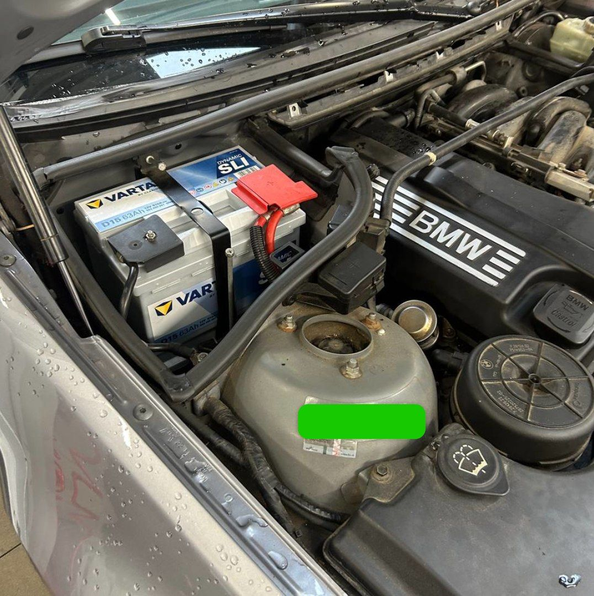

Home / Battery and electrical
Where Is the Battery on a BMW?
Quick answer
On many BMWs the battery is in the trunk, usually under a square cover in the trunk floor. On some older models it sits under the hood, as in the photo. If you can't see it under the hood, look in the trunk and check your manual. For jump-starting, use the dedicated terminal under the hood.

In the trunk
On many BMWs the battery is hidden in the trunk, usually under a square cover in the floor. Lift the trunk floor and look for the square cover, and check your manual for the exact position on your car.
Under the hood
On some older BMWs the battery is under the hood. On the car in the photo, it sits next to the engine cover.
Check the label
Whichever car you have, read the label on the battery before you buy a new one. It shows the type (for example EFB or AGM) and the capacity in Ah. In the photo, an old EFB battery sits on top of new AGM batteries of the same capacity.

Why the location matters
- Jump-starting: if the battery is in the trunk, there is a dedicated terminal under the hood. See BMW Jump-Start Points
- Replacing it: a new battery should be registered with the car. See BMW Battery Registration
- Diagnostics: the OBD port is a separate matter. See BMW OBD Port Location
Safety note. Switch off the ignition before working near the battery, keep metal tools away from the terminals and follow your manual if you need to disconnect it.
FAQ
Where is the battery on a BMW?
On many models it is in the trunk, under a square cover in the floor. On some older cars it is under the hood.
Why is the battery in the trunk?
Often it is said to help weight distribution, and it keeps the battery away from the heat of the engine bay.
How do I jump-start a BMW with the battery in the trunk?
Use the dedicated positive terminal under the hood, and the grounding point. See the jump-start guide.
How long does a BMW battery last?
Typically around three to five years, depending on climate and use.
Do I need to register a new BMW battery?
Most modern BMWs need it. See the registration guide.
This guide is general information based on personal experience, not professional advice. Check your own car's manual for exact specs and read the disclaimer before starting any job.